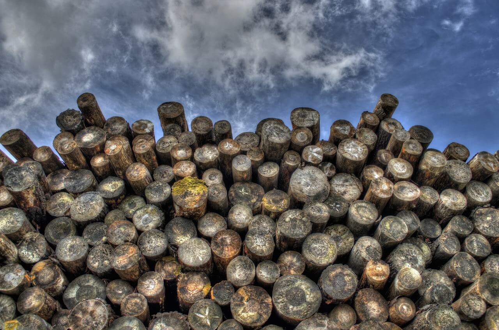

No Brasil, a Política Nacional do Meio Ambiente, Lei nº 6.938, de 31 de Agosto de 1981, define os instrumentos para proteção do meio ambiente. É considerada o marco inicial das ações para conservação ambiental
no Brasil. Através dela, o meio ambiente é definido como: "o conjunto de condições, leis, influências e interações de ordem física e biológica, que permite, abriga e rege a vida em todas as suas formas". A Constituição Federal
Brasileira também possui um artigo que trata exclusivamente do Meio Ambiente. O artigo 225 cita que: “Todos têm direito ao meio ambiente ecologicamente equilibrado, bem de uso comum do povo e essencial à sadia qualidade de vida...”
O órgão responsável pelas ações e políticas ambientais no Brasil é o Ministério do Meio Ambiente (MMA).
Dada a urgência e a preocupação mundial com os problemas ambientais e os impactos dele decorrentes, surgiram vários acordos e tratados internacionais. Eles propõem novos modelos de desenvolvimento, redução da emissão
de gases poluentes e conservação ambiental. A preocupação ambiental vem sendo tratada no âmbito internacional desde a realização da Conferência de Estocolmo, em 1972. Após isso, ganhou novamente destaque na Conferência das Nações
Unidas para o Meio Ambiente e Desenvolvimento (RIO-92 ou ECO-92), com a aprovação da Agenda 21.
Nas últimas décadas, o meio ambiente vem sofrendo cada vez mais com a ação humana, uma delas é a prática da queimada. Como essa intervenção nem sempre é harmônica e de forma sustentável, surgem os problemas ambientais,
que são: Mudanças climáticas, efeito estufa, poluição da água, aquecimento global, entre outros.
- ︎Todos os anos são destruídos mais de 13 milhões de hectares de floresta tropical. Se as contas forem feitas, isto representa a destruição de 35 mil hectares por dia, 1500 hectares por hora e 25 hectares por minuto.
- Uma tonelada de papel reciclado poupa cerca de 22 árvores, economiza 71% de energia elétrica e polui o ar 74% menos .

